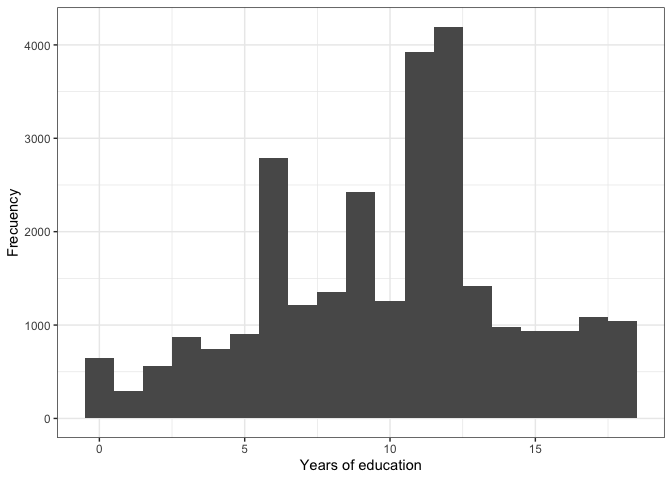

Introduction
In this section we will see basic aspects of how to describe a
numerical variable. For that, we will continue to use the 2018/19
regional report “The Pulse of Democracy”, available here,
where the main findings of the 2018/19 round of the AmericasBarometer
are presented. One of the sections of this document reports information
on social networks and political attitudes. This section presents
information on Internet use and the use of social networks, in general,
by country and by certain sociodemographic characteristics.
About the dataset
The data we are going to use should be cited as follows: Source:
AmericasBarometer by the Latin American Public Opinion Project (LAPOP),
wwww.LapopSurveys.org. This section loads a trimmed database. This
database is hosted in the “materials_edu” repository of the LAPOP
account on GitHub. It is recommended to clean the Environment before
starting this module.
Using the library rio and the command
import, you can import this database from this repository.
In addition, the data from countries with codes less than or equal to 35
are selected, that is, the observations of the United States and Canada
are eliminated.
library(rio)
lapop18 = import("https://raw.github.com/lapop-central/materials_edu/main/LAPOP_AB_Merge_2018_v1.0.sav")
lapop18 = subset(lapop18, pais<=35)
Describing a numeric variable
Table 3.2 of the report “The Pulse of Democracy” shows the general
averages of the variables age (“q2” in the database) and years of study
(“ed” in the database) for the general population.

The command mean is used to calculate the average and
na.rm=T is used because these variables have missing
values.
mean(lapop18$q2, na.rm=T)
## [1] 39.99204
mean(lapop18$ed, na.rm=T)
## [1] 9.934748
In the section where we worked with qualitative variables (or factor
variables, in the language of R), we saw that the variables “men” and
“urban” could be described by defining these variables as a factor,
labeling them and making a frequency table of these variables. Other way
to find the percentage of people who are men or who live in urban areas
is to work with these variables, but not define them as a factor. When
variables are created, they are both defined by default as numeric. In
this case, in addition to being numeric, they are variables of type
dummy, that is, with values 0 and 1. In the case of the “men” variable,
we defined 0 = Woman and 1 = Man; and in the case of the “urban”
variable we define 0 = Rural and 1 = Urban. It is a good practice to
name the dummy variable with a name that refers to category 1. With
dummy variables, when the average is calculated, the result is the same
as the percentage of category 1. So, if
mean(lapop$man, na.rm=T) is calculated, this operation
gives us the percentage of category 1, that is, men. It is multiplied by
100 to put it in a format from 0 to 100.
lapop18$men = 2-lapop18$q1
lapop18$urban = 2-lapop18$ur
mean(lapop18$men, na.rm=T)*100
## [1] 49.74846
mean(lapop18$urban, na.rm=T)*100
## [1] 71.15398
These results are the same as those presented in the first column of
results for the general population, except for the wealth variable
(“quintall”) which is not available in this trimmed version of the
dataset.
Plotting a numeric variable
After describing a numeric variable, you can also include some basic
plots, for example, using the command hist you can produce
the histogram of the variable “years of education” (ed).
hist(lapop18$ed)

This same plot can be reproduced using the command
ggplot. With this command we have more flexibility with the
graphic options. First, we define the dataframe to be used “lapop18” and
the variable “ed” on the X axis. Then we define the specification
geom_histogram() to produce a histogram. We define the
width of the histogram bar with banwidth=1. Finally, this
code allows you to label the X and Y axis and include a black and white
theme, with theme_bw().
library(ggplot2)
ggplot(lapop18, aes(x=ed))+
geom_histogram(binwidth = 1)+
xlab("Years of education")+
ylab("Frecuency")+
theme_bw()

Average by groups
Table 3.2 of the report shows the mean of these numerical variables
by groups of variables related to social networks. For example, it shows
the average of years of study for Facebook users and for non-Facebook
users. If we want to calculate the average of years of study for
Facebook users, we first calculate this variable, in the same way as in
previous sections, with the command ifelse.
lapop18$fb_user <- ifelse(lapop18$smedia1==1 & lapop18$smedia2<=4, 1, 0)
lapop18$tw_user <- ifelse(lapop18$smedia4==1 & lapop18$smedia5<=4, 1, 0)
lapop18$wa_user <- ifelse(lapop18$smedia7==1 & lapop18$smedia8<=4, 1, 0)
Calculating the average years for Facebook users and non-users can be
done in many ways. A first option is by using the square brackets
[...]. In this case, we will calculate the average years of
study by user groups [lapop18$fb_user==1] and non-Facebook
users [lapop18$fb_user==0].
mean(lapop18$ed[lapop18$fb_user==0], na.rm=T)
## [1] 8.064905
mean(lapop18$ed[lapop18$fb_user==1], na.rm=T)
## [1] 11.44839
Describing of a numerical variable by groups
Other way to describe a numeric variable is by using the command
summary. This command reports the most used descriptive
statistics for a numerical variable: minimum, maximum, quartiles, mean
and median. All these statistics allow a better comparison between both
groups, users and non-users of Facebook. Within this command you can
include the digits=3 specification to round the results,
which avoids having to use round, for example.
summary(lapop18$ed[lapop18$fb_user==0], na.rm=T, digits=3)
## Min. 1st Qu. Median Mean 3rd Qu. Max. NA's
## 0.00 5.00 8.00 8.06 11.00 18.00 1374
summary(lapop18$ed[lapop18$fb_user==1], na.rm=T, digits=3)
## Min. 1st Qu. Median Mean 3rd Qu. Max. NA's
## 0.0 9.0 12.0 11.4 14.0 18.0 1240
However, the command summary does not return an
important statistic such as the standard deviation, a measure of
dispersion or heterogeneity. In order to have the above statistics and
include the standard deviation, among other additional measurements, you
can use the command describeBy, which is part of the
library psych. This command asks for the variable to
describe (“ed”) and the variable that forms the groups (“fb_user”) and
provides the mean, standard deviation, median, trimmed mean, absolute
deviation from the median, minimum and maximum.
library(psych)
describeBy(lapop18$ed, lapop18$fb_user)
##
## Descriptive statistics by group
## group: 0
## vars n mean sd median trimmed mad min max range skew kurtosis se
## X1 1 11540 8.06 4.3 8 7.99 4.45 0 18 18 0.13 -0.52 0.04
## ------------------------------------------------------------
## group: 1
## vars n mean sd median trimmed mad min max range skew kurtosis se
## X1 1 14998 11.45 3.59 12 11.52 2.97 0 18 18 -0.24 0 0.03
This same information can be obtained using the tidyverse style of
coding (with the operator pype %>%) and saved to a
table. This table can save the data of the average age for WhatsApp
users and non-users and also the standard deviation of each group.
First, we define which dataframe to work with. Then, it is indicated
that the missing values of the Whatsapp users variable are not used
internally with filter(!is.na(wa_user)). Next, it is
indicated that it will work in groups of the WhatsApp users variable
with group_by(wa_user). Finally, it is indicated that in
each group the mean and standard deviation will be calculated, with
summarise.
library(dplyr)
whatxedad <- lapop18 %>%
filter(!is.na(wa_user)) %>%
group_by(wa_user) %>%
summarise(promedio = mean(q2, na.rm=T), sd = sd(q2, na.rm=T))
whatxedad
Plotting a numeric variable by groups
The report does not show it, but graphs can be presented for each
group to facilitate the comparison of a variable. To make these
comparative graphs by group, we’re going to continue to use the
tidyverse. As in the previous table, the dataframe is defined and it is
indicated that the missing values of the “wa_user” variable are not
taken into account. Then, it is instructed to make a plot, with
ggplot having the variable “q2” on the X axis. This graph
is defined to be a histogram with geom_histogram(). A
novelty is that, with the facet_wrap(~wa_user)
specification, it is possible to indicate that graphs are made for each
group of that variable. Finally, the axes are labeled.
lapop18 %>%
filter(!is.na(wa_user)) %>%
ggplot(aes(x=q2))+
geom_histogram()+
facet_wrap(~wa_user)+
xlab("Age")+
ylab("Frecuency")

This graph, however, shows the values 0 and 1 of the variable
“wa_user” in the header of both graphs. This is because this variable,
when created, was defined by default as numeric. For the variable labels
to appear, you have to transform “wa_user” into a factor and label
it.
lapop18$wa_user = as.factor(lapop18$wa_user)
levels(lapop18$wa_user) <- c("No user", "User")
Other way to compare the age distribution by groups of WhatsApp users
or non-users is by means of a boxplot. With the command
boxplot you can make these plots. The command first asks
for the variable on the Y axis, then the variable that defines the
groups and the dataframe. You can label the X and Y axis with the names
of the variables. Since the variable “wa_user” has been factored and
labeled, the labels now appear.
boxplot(q2 ~ wa_user, data=lapop18, xlab ="Whatsapp user", ylab="Age")

Summary
In this section we have worked with numerical variables, such as age
or years of study. Descriptive statistics have been calculated, such as
the mean or standard deviation for the entire population or by groups.
Finally, several ways of graphing these variables have been presented,
using histograms or boxplots.
Calculations including survey weights
The above results do not include survey weights. To include weights
in the calculations you can use the command weighted.mean,
which is part of the library stats, which comes preloaded
with R, so you don’t have to install it.
weighted.mean(lapop18$q2, lapop18$weight1500, na.rm=T)
## [1] 39.98095
weighted.mean(lapop18$ed, lapop18$weight1500, na.rm=T)
## [1] 9.931417
weighted.mean(lapop18$men, lapop18$weight1500, na.rm=T)*100
## [1] 49.74826
weighted.mean(lapop18$urban, lapop18$weight1500, na.rm=T)*100
## [1] 71.11895
Other way to calculate the mean including the expansion factor is by
using the library survey and its native command
svymean. For this you have to define the sample design with
the command svydesign and save this design in an object,
here called “design18”.
library(survey)
design18 = svydesign(ids = ~upm, strata = ~estratopri, weights = ~weight1500, nest=TRUE, data=lapop18)
To calculate the average, the command svymean is used
and the na.rm=T specification is used because these
variables have missing values.
svymean(~q2, design18, na.rm=T)
## mean SE
## q2 39.981 0.0535
svymean(~ed, design18, na.rm=T)
## mean SE
## ed 9.9314 0.04
For dummy variables, the procedure is the same, except that they are
multiplied by 100 to present it in percentage format.
svymean(~men, design18, na.rm =T)*100
## mean SE
## men 49.748 8e-04
svymean(~urban, design18, na.rm=T)*100
## mean SE
## urban 71.119 0.0076
The package survey also has commands to replicate
charts. For example, to calculate a simple histogram.
svyhist(~ed, design18, freq = T)

To calculate descriptive statistics by groups, you can use the
command svyby, which allows you to define the numerical
variable that you want to describe, the variable that defines the
groups, and the weighted statistic that you want to calculate.
svyby(~ed, ~fb_user, design18, svymean, na.rm=T)
To reproduce a descriptive graph by groups, the command
svyboxplot can be used to compare the distribution of the
age variable between groups of a variable of type factor, such as
WhatsApp users.
svyboxplot(~q2~factor(wa_user), design18, all.outliers = T)

LS0tCnRpdGxlOiAiRGVzY3JpcHRpdmUgc3RhdGlzdGljcyB1c2luZyB0aGUgQW1lcmljYXMgQmFyb21ldGVyICgzKSIKb3V0cHV0OgogIGh0bWxfZG9jdW1lbnQ6CiAgICB0b2M6IHRydWUKICAgIHRvY19mbG9hdDogdHJ1ZQogICAgY29sbGFwc2VkOiBmYWxzZQogICAgbnVtYmVyX3NlY3Rpb25zOiBmYWxzZQogICAgdG9jX2RlcHRoOiAxCiAgICBjb2RlX2Rvd25sb2FkOiB0cnVlCiAgICB0aGVtZTogZmxhdGx5CiAgICBkZl9wcmludDogcGFnZWQKICAgIHNlbGZfY29udGFpbmVkOiBubwogICAga2VlcF9tZDogeWVzCiAgICAjY29kZV9mb2xkaW5nOiBoaWRlCmVkaXRvcl9vcHRpb25zOiAKICBtYXJrZG93bjogCiAgICB3cmFwOiBzZW50ZW5jZQotLS0KCmBgYHtyIHNldHVwLCBpbmNsdWRlPUZBTFNFfQprbml0cjo6b3B0c19jaHVuayRzZXQobWVzc2FnZT1GQUxTRSx3YXJuaW5nPUZBTFNFLCBjYWNoZT1UUlVFKQpgYGAKCmBgYHtjc3MgY29sb3IsIGVjaG89RkFMU0V9Ci5jb2x1bW5zIHtkaXNwbGF5OiBmbGV4O30KaDEge2NvbG9yOiAjMzM2NkNDO30KYGBgCgojIEludHJvZHVjdGlvbgoKSW4gdGhpcyBzZWN0aW9uIHdlIHdpbGwgc2VlIGJhc2ljIGFzcGVjdHMgb2YgaG93IHRvIGRlc2NyaWJlIGEgbnVtZXJpY2FsIHZhcmlhYmxlLgpGb3IgdGhhdCwgd2Ugd2lsbCBjb250aW51ZSB0byB1c2UgdGhlIDIwMTgvMTkgcmVnaW9uYWwgcmVwb3J0ICJUaGUgUHVsc2Ugb2YgRGVtb2NyYWN5IiwgYXZhaWxhYmxlIFtoZXJlXShodHRwczovL3d3dy52YW5kZXJiaWx0LmVkdS9sYXBvcC9hYjIwMTgvMjAxOC0xOV9BbWVyaWNhc0Jhcm9tZXRlcl9SZWdpb25hbF9SZXBvcnRfMTAuMTMuMTkucGRmKSwgd2hlcmUgdGhlIG1haW4gZmluZGluZ3Mgb2YgdGhlIDIwMTgvMTkgcm91bmQgb2YgdGhlIEFtZXJpY2FzQmFyb21ldGVyIGFyZSBwcmVzZW50ZWQuCk9uZSBvZiB0aGUgc2VjdGlvbnMgb2YgdGhpcyBkb2N1bWVudCByZXBvcnRzIGluZm9ybWF0aW9uIG9uIHNvY2lhbCBuZXR3b3JrcyBhbmQgcG9saXRpY2FsIGF0dGl0dWRlcy4KVGhpcyBzZWN0aW9uIHByZXNlbnRzIGluZm9ybWF0aW9uIG9uIEludGVybmV0IHVzZSBhbmQgdGhlIHVzZSBvZiBzb2NpYWwgbmV0d29ya3MsIGluIGdlbmVyYWwsIGJ5IGNvdW50cnkgYW5kIGJ5IGNlcnRhaW4gc29jaW9kZW1vZ3JhcGhpYyBjaGFyYWN0ZXJpc3RpY3MuCgojIEFib3V0IHRoZSBkYXRhc2V0CgpUaGUgZGF0YSB3ZSBhcmUgZ29pbmcgdG8gdXNlIHNob3VsZCBiZSBjaXRlZCBhcyBmb2xsb3dzOiBTb3VyY2U6IEFtZXJpY2FzQmFyb21ldGVyIGJ5IHRoZSBMYXRpbiBBbWVyaWNhbiBQdWJsaWMgT3BpbmlvbiBQcm9qZWN0IChMQVBPUCksIHd3d3cuTGFwb3BTdXJ2ZXlzLm9yZy4KVGhpcyBzZWN0aW9uIGxvYWRzIGEgdHJpbW1lZCBkYXRhYmFzZS4KVGhpcyBkYXRhYmFzZSBpcyBob3N0ZWQgaW4gdGhlICJtYXRlcmlhbHNfZWR1IiByZXBvc2l0b3J5IG9mIHRoZSBMQVBPUCBhY2NvdW50IG9uIEdpdEh1Yi4KSXQgaXMgcmVjb21tZW5kZWQgdG8gY2xlYW4gdGhlIEVudmlyb25tZW50IGJlZm9yZSBzdGFydGluZyB0aGlzIG1vZHVsZS4KClVzaW5nIHRoZSBsaWJyYXJ5IGByaW9gIGFuZCB0aGUgY29tbWFuZCBgaW1wb3J0YCwgeW91IGNhbiBpbXBvcnQgdGhpcyBkYXRhYmFzZSBmcm9tIHRoaXMgcmVwb3NpdG9yeS4KSW4gYWRkaXRpb24sIHRoZSBkYXRhIGZyb20gY291bnRyaWVzIHdpdGggY29kZXMgbGVzcyB0aGFuIG9yIGVxdWFsIHRvIDM1IGFyZSBzZWxlY3RlZCwgdGhhdCBpcywgdGhlIG9ic2VydmF0aW9ucyBvZiB0aGUgVW5pdGVkIFN0YXRlcyBhbmQgQ2FuYWRhIGFyZSBlbGltaW5hdGVkLgoKYGBge3IgYmFzZX0KbGlicmFyeShyaW8pCmxhcG9wMTggPSBpbXBvcnQoImh0dHBzOi8vcmF3LmdpdGh1Yi5jb20vbGFwb3AtY2VudHJhbC9tYXRlcmlhbHNfZWR1L21haW4vTEFQT1BfQUJfTWVyZ2VfMjAxOF92MS4wLnNhdiIpCmxhcG9wMTggPSBzdWJzZXQobGFwb3AxOCwgcGFpczw9MzUpCmBgYAoKIyBEZXNjcmliaW5nIGEgbnVtZXJpYyB2YXJpYWJsZQoKVGFibGUgMy4yIG9mIHRoZSByZXBvcnQgIlRoZSBQdWxzZSBvZiBEZW1vY3JhY3kiIHNob3dzIHRoZSBnZW5lcmFsIGF2ZXJhZ2VzIG9mIHRoZSB2YXJpYWJsZXMgYWdlICgicTIiIGluIHRoZSBkYXRhYmFzZSkgYW5kIHllYXJzIG9mIHN0dWR5ICgiZWQiIGluIHRoZSBkYXRhYmFzZSkgZm9yIHRoZSBnZW5lcmFsIHBvcHVsYXRpb24uCgohW10oVGFibGUlMjAzLjIuSlBHKXt3aWR0aD0iNjA0In0KClRoZSBjb21tYW5kIGBtZWFuYCBpcyB1c2VkIHRvIGNhbGN1bGF0ZSB0aGUgYXZlcmFnZSBhbmQgYG5hLnJtPVRgIGlzIHVzZWQgYmVjYXVzZSB0aGVzZSB2YXJpYWJsZXMgaGF2ZSBtaXNzaW5nIHZhbHVlcy4KCmBgYHtyIG1lYW59Cm1lYW4obGFwb3AxOCRxMiwgbmEucm09VCkKbWVhbihsYXBvcDE4JGVkLCBuYS5ybT1UKQpgYGAKCkluIHRoZSBzZWN0aW9uIHdoZXJlIHdlIHdvcmtlZCB3aXRoIHF1YWxpdGF0aXZlIHZhcmlhYmxlcyAob3IgZmFjdG9yIHZhcmlhYmxlcywgaW4gdGhlIGxhbmd1YWdlIG9mIFIpLCB3ZSBzYXcgdGhhdCB0aGUgdmFyaWFibGVzICJtZW4iIGFuZCAidXJiYW4iIGNvdWxkIGJlIGRlc2NyaWJlZCBieSBkZWZpbmluZyB0aGVzZSB2YXJpYWJsZXMgYXMgYSBmYWN0b3IsIGxhYmVsaW5nIHRoZW0gYW5kIG1ha2luZyBhIGZyZXF1ZW5jeSB0YWJsZSBvZiB0aGVzZSB2YXJpYWJsZXMuCk90aGVyIHdheSB0byBmaW5kIHRoZSBwZXJjZW50YWdlIG9mIHBlb3BsZSB3aG8gYXJlIG1lbiBvciB3aG8gbGl2ZSBpbiB1cmJhbiBhcmVhcyBpcyB0byB3b3JrIHdpdGggdGhlc2UgdmFyaWFibGVzLCBidXQgbm90IGRlZmluZSB0aGVtIGFzIGEgZmFjdG9yLgpXaGVuIHZhcmlhYmxlcyBhcmUgY3JlYXRlZCwgdGhleSBhcmUgYm90aCBkZWZpbmVkIGJ5IGRlZmF1bHQgYXMgbnVtZXJpYy4KSW4gdGhpcyBjYXNlLCBpbiBhZGRpdGlvbiB0byBiZWluZyBudW1lcmljLCB0aGV5IGFyZSB2YXJpYWJsZXMgb2YgdHlwZSBkdW1teSwgdGhhdCBpcywgd2l0aCB2YWx1ZXMgMCBhbmQgMS4KSW4gdGhlIGNhc2Ugb2YgdGhlICJtZW4iIHZhcmlhYmxlLCB3ZSBkZWZpbmVkIDAgPSBXb21hbiBhbmQgMSA9IE1hbjsgYW5kIGluIHRoZSBjYXNlIG9mIHRoZSAidXJiYW4iIHZhcmlhYmxlIHdlIGRlZmluZSAwID0gUnVyYWwgYW5kIDEgPSBVcmJhbi4KSXQgaXMgYSBnb29kIHByYWN0aWNlIHRvIG5hbWUgdGhlIGR1bW15IHZhcmlhYmxlIHdpdGggYSBuYW1lIHRoYXQgcmVmZXJzIHRvIGNhdGVnb3J5IDEuCldpdGggZHVtbXkgdmFyaWFibGVzLCB3aGVuIHRoZSBhdmVyYWdlIGlzIGNhbGN1bGF0ZWQsIHRoZSByZXN1bHQgaXMgdGhlIHNhbWUgYXMgdGhlIHBlcmNlbnRhZ2Ugb2YgY2F0ZWdvcnkgMS4KU28sIGlmIGBtZWFuKGxhcG9wJG1hbiwgbmEucm09VClgIGlzIGNhbGN1bGF0ZWQsIHRoaXMgb3BlcmF0aW9uIGdpdmVzIHVzIHRoZSBwZXJjZW50YWdlIG9mIGNhdGVnb3J5IDEsIHRoYXQgaXMsIG1lbi4KSXQgaXMgbXVsdGlwbGllZCBieSAxMDAgdG8gcHV0IGl0IGluIGEgZm9ybWF0IGZyb20gMCB0byAxMDAuCgpgYGB7ciBkdW1teSBhdmVyYWdlfQpsYXBvcDE4JG1lbiA9IDItbGFwb3AxOCRxMQpsYXBvcDE4JHVyYmFuID0gMi1sYXBvcDE4JHVyCm1lYW4obGFwb3AxOCRtZW4sIG5hLnJtPVQpKjEwMAptZWFuKGxhcG9wMTgkdXJiYW4sIG5hLnJtPVQpKjEwMApgYGAKClRoZXNlIHJlc3VsdHMgYXJlIHRoZSBzYW1lIGFzIHRob3NlIHByZXNlbnRlZCBpbiB0aGUgZmlyc3QgY29sdW1uIG9mIHJlc3VsdHMgZm9yIHRoZSBnZW5lcmFsIHBvcHVsYXRpb24sIGV4Y2VwdCBmb3IgdGhlIHdlYWx0aCB2YXJpYWJsZSAoInF1aW50YWxsIikgd2hpY2ggaXMgbm90IGF2YWlsYWJsZSBpbiB0aGlzIHRyaW1tZWQgdmVyc2lvbiBvZiB0aGUgZGF0YXNldC4KCiMgUGxvdHRpbmcgYSBudW1lcmljIHZhcmlhYmxlCgpBZnRlciBkZXNjcmliaW5nIGEgbnVtZXJpYyB2YXJpYWJsZSwgeW91IGNhbiBhbHNvIGluY2x1ZGUgc29tZSBiYXNpYyBwbG90cywgZm9yIGV4YW1wbGUsIHVzaW5nIHRoZSBjb21tYW5kIGBoaXN0YCB5b3UgY2FuIHByb2R1Y2UgdGhlIGhpc3RvZ3JhbSBvZiB0aGUgdmFyaWFibGUgInllYXJzIG9mIGVkdWNhdGlvbiIgKGVkKS4KCmBgYHtyIHNpbXBsZSBoaXN0b2dyYW19Cmhpc3QobGFwb3AxOCRlZCkKYGBgCgpUaGlzIHNhbWUgcGxvdCBjYW4gYmUgcmVwcm9kdWNlZCB1c2luZyB0aGUgY29tbWFuZCBgZ2dwbG90YC4KV2l0aCB0aGlzIGNvbW1hbmQgd2UgaGF2ZSBtb3JlIGZsZXhpYmlsaXR5IHdpdGggdGhlIGdyYXBoaWMgb3B0aW9ucy4KRmlyc3QsIHdlIGRlZmluZSB0aGUgZGF0YWZyYW1lIHRvIGJlIHVzZWQgImxhcG9wMTgiIGFuZCB0aGUgdmFyaWFibGUgImVkIiBvbiB0aGUgWCBheGlzLgpUaGVuIHdlIGRlZmluZSB0aGUgc3BlY2lmaWNhdGlvbiBgZ2VvbV9oaXN0b2dyYW0oKWAgdG8gcHJvZHVjZSBhIGhpc3RvZ3JhbS4KV2UgZGVmaW5lIHRoZSB3aWR0aCBvZiB0aGUgaGlzdG9ncmFtIGJhciB3aXRoIGBiYW53aWR0aD0xYC4KRmluYWxseSwgdGhpcyBjb2RlIGFsbG93cyB5b3UgdG8gbGFiZWwgdGhlIFggYW5kIFkgYXhpcyBhbmQgaW5jbHVkZSBhIGJsYWNrIGFuZCB3aGl0ZSB0aGVtZSwgd2l0aCBgdGhlbWVfYncoKWAuCgpgYGB7ciBnZ2hpc3QsIG1lc3NhZ2U9RkFMU0UsIHdhcm5pbmc9RkFMU0V9CmxpYnJhcnkoZ2dwbG90MikKZ2dwbG90KGxhcG9wMTgsIGFlcyh4PWVkKSkrCiAgZ2VvbV9oaXN0b2dyYW0oYmlud2lkdGggPSAxKSsKICB4bGFiKCJZZWFycyBvZiBlZHVjYXRpb24iKSsKICB5bGFiKCJGcmVjdWVuY3kiKSsKICB0aGVtZV9idygpCmBgYAoKIyBBdmVyYWdlIGJ5IGdyb3VwcwoKVGFibGUgMy4yIG9mIHRoZSByZXBvcnQgc2hvd3MgdGhlIG1lYW4gb2YgdGhlc2UgbnVtZXJpY2FsIHZhcmlhYmxlcyBieSBncm91cHMgb2YgdmFyaWFibGVzIHJlbGF0ZWQgdG8gc29jaWFsIG5ldHdvcmtzLgpGb3IgZXhhbXBsZSwgaXQgc2hvd3MgdGhlIGF2ZXJhZ2Ugb2YgeWVhcnMgb2Ygc3R1ZHkgZm9yIEZhY2Vib29rIHVzZXJzIGFuZCBmb3Igbm9uLUZhY2Vib29rIHVzZXJzLgpJZiB3ZSB3YW50IHRvIGNhbGN1bGF0ZSB0aGUgYXZlcmFnZSBvZiB5ZWFycyBvZiBzdHVkeSBmb3IgRmFjZWJvb2sgdXNlcnMsIHdlIGZpcnN0IGNhbGN1bGF0ZSB0aGlzIHZhcmlhYmxlLCBpbiB0aGUgc2FtZSB3YXkgYXMgaW4gcHJldmlvdXMgc2VjdGlvbnMsIHdpdGggdGhlIGNvbW1hbmQgYGlmZWxzZWAuCgpgYGB7ciB1c2Vyc30KbGFwb3AxOCRmYl91c2VyIDwtIGlmZWxzZShsYXBvcDE4JHNtZWRpYTE9PTEgJiBsYXBvcDE4JHNtZWRpYTI8PTQsIDEsIDApCmxhcG9wMTgkdHdfdXNlciA8LSBpZmVsc2UobGFwb3AxOCRzbWVkaWE0PT0xICYgbGFwb3AxOCRzbWVkaWE1PD00LCAxLCAwKQpsYXBvcDE4JHdhX3VzZXIgPC0gaWZlbHNlKGxhcG9wMTgkc21lZGlhNz09MSAmIGxhcG9wMTgkc21lZGlhODw9NCwgMSwgMCkKYGBgCgpDYWxjdWxhdGluZyB0aGUgYXZlcmFnZSB5ZWFycyBmb3IgRmFjZWJvb2sgdXNlcnMgYW5kIG5vbi11c2VycyBjYW4gYmUgZG9uZSBpbiBtYW55IHdheXMuCkEgZmlyc3Qgb3B0aW9uIGlzIGJ5IHVzaW5nIHRoZSBzcXVhcmUgYnJhY2tldHMgYFsuLi5dYC4KSW4gdGhpcyBjYXNlLCB3ZSB3aWxsIGNhbGN1bGF0ZSB0aGUgYXZlcmFnZSB5ZWFycyBvZiBzdHVkeSBieSB1c2VyIGdyb3VwcyBgW2xhcG9wMTgkZmJfdXNlcj09MV1gIGFuZCBub24tRmFjZWJvb2sgdXNlcnMgYFtsYXBvcDE4JGZiX3VzZXI9PTBdYC4KCmBgYHtyIEZiIHN0dWR5IHllYXJzfQptZWFuKGxhcG9wMTgkZWRbbGFwb3AxOCRmYl91c2VyPT0wXSwgbmEucm09VCkKbWVhbihsYXBvcDE4JGVkW2xhcG9wMTgkZmJfdXNlcj09MV0sIG5hLnJtPVQpCmBgYAoKIyBEZXNjcmliaW5nIG9mIGEgbnVtZXJpY2FsIHZhcmlhYmxlIGJ5IGdyb3VwcwoKT3RoZXIgd2F5IHRvIGRlc2NyaWJlIGEgbnVtZXJpYyB2YXJpYWJsZSBpcyBieSB1c2luZyB0aGUgY29tbWFuZCBgc3VtbWFyeWAuClRoaXMgY29tbWFuZCByZXBvcnRzIHRoZSBtb3N0IHVzZWQgZGVzY3JpcHRpdmUgc3RhdGlzdGljcyBmb3IgYSBudW1lcmljYWwgdmFyaWFibGU6IG1pbmltdW0sIG1heGltdW0sIHF1YXJ0aWxlcywgbWVhbiBhbmQgbWVkaWFuLgpBbGwgdGhlc2Ugc3RhdGlzdGljcyBhbGxvdyBhIGJldHRlciBjb21wYXJpc29uIGJldHdlZW4gYm90aCBncm91cHMsIHVzZXJzIGFuZCBub24tdXNlcnMgb2YgRmFjZWJvb2suCldpdGhpbiB0aGlzIGNvbW1hbmQgeW91IGNhbiBpbmNsdWRlIHRoZSBgZGlnaXRzPTNgIHNwZWNpZmljYXRpb24gdG8gcm91bmQgdGhlIHJlc3VsdHMsIHdoaWNoIGF2b2lkcyBoYXZpbmcgdG8gdXNlIGByb3VuZGAsIGZvciBleGFtcGxlLgoKYGBge3J9CnN1bW1hcnkobGFwb3AxOCRlZFtsYXBvcDE4JGZiX3VzZXI9PTBdLCBuYS5ybT1ULCBkaWdpdHM9MykKc3VtbWFyeShsYXBvcDE4JGVkW2xhcG9wMTgkZmJfdXNlcj09MV0sIG5hLnJtPVQsIGRpZ2l0cz0zKQpgYGAKCkhvd2V2ZXIsIHRoZSBjb21tYW5kIGBzdW1tYXJ5YCBkb2VzIG5vdCByZXR1cm4gYW4gaW1wb3J0YW50IHN0YXRpc3RpYyBzdWNoIGFzIHRoZSBzdGFuZGFyZCBkZXZpYXRpb24sIGEgbWVhc3VyZSBvZiBkaXNwZXJzaW9uIG9yIGhldGVyb2dlbmVpdHkuCkluIG9yZGVyIHRvIGhhdmUgdGhlIGFib3ZlIHN0YXRpc3RpY3MgYW5kIGluY2x1ZGUgdGhlIHN0YW5kYXJkIGRldmlhdGlvbiwgYW1vbmcgb3RoZXIgYWRkaXRpb25hbCBtZWFzdXJlbWVudHMsIHlvdSBjYW4gdXNlIHRoZSBjb21tYW5kIGBkZXNjcmliZUJ5YCwgd2hpY2ggaXMgcGFydCBvZiB0aGUgbGlicmFyeSBgcHN5Y2hgLgpUaGlzIGNvbW1hbmQgYXNrcyBmb3IgdGhlIHZhcmlhYmxlIHRvIGRlc2NyaWJlICgiZWQiKSBhbmQgdGhlIHZhcmlhYmxlIHRoYXQgZm9ybXMgdGhlIGdyb3VwcyAoImZiX3VzZXIiKSBhbmQgcHJvdmlkZXMgdGhlIG1lYW4sIHN0YW5kYXJkIGRldmlhdGlvbiwgbWVkaWFuLCB0cmltbWVkIG1lYW4sIGFic29sdXRlIGRldmlhdGlvbiBmcm9tIHRoZSBtZWRpYW4sIG1pbmltdW0gYW5kIG1heGltdW0uCgpgYGB7ciBhdmVyYWdlIHllYXJzIG9mIHN0dWR5IGJ5IEZCLCBtZXNzYWdlPUZBTFNFLCB3YXJuaW5nPUZBTFNFfQpsaWJyYXJ5KHBzeWNoKQpkZXNjcmliZUJ5KGxhcG9wMTgkZWQsIGxhcG9wMTgkZmJfdXNlcikKYGBgCgpUaGlzIHNhbWUgaW5mb3JtYXRpb24gY2FuIGJlIG9idGFpbmVkIHVzaW5nIHRoZSB0aWR5dmVyc2Ugc3R5bGUgb2YgY29kaW5nICh3aXRoIHRoZSBvcGVyYXRvciBweXBlIGAlPiVgKSBhbmQgc2F2ZWQgdG8gYSB0YWJsZS4KVGhpcyB0YWJsZSBjYW4gc2F2ZSB0aGUgZGF0YSBvZiB0aGUgYXZlcmFnZSBhZ2UgZm9yIFdoYXRzQXBwIHVzZXJzIGFuZCBub24tdXNlcnMgYW5kIGFsc28gdGhlIHN0YW5kYXJkIGRldmlhdGlvbiBvZiBlYWNoIGdyb3VwLgpGaXJzdCwgd2UgZGVmaW5lIHdoaWNoIGRhdGFmcmFtZSB0byB3b3JrIHdpdGguClRoZW4sIGl0IGlzIGluZGljYXRlZCB0aGF0IHRoZSBtaXNzaW5nIHZhbHVlcyBvZiB0aGUgV2hhdHNhcHAgdXNlcnMgdmFyaWFibGUgYXJlIG5vdCB1c2VkIGludGVybmFsbHkgd2l0aCBgZmlsdGVyKCFpcy5uYSh3YV91c2VyKSlgLgpOZXh0LCBpdCBpcyBpbmRpY2F0ZWQgdGhhdCBpdCB3aWxsIHdvcmsgaW4gZ3JvdXBzIG9mIHRoZSBXaGF0c0FwcCB1c2VycyB2YXJpYWJsZSB3aXRoIGBncm91cF9ieSh3YV91c2VyKWAuCkZpbmFsbHksIGl0IGlzIGluZGljYXRlZCB0aGF0IGluIGVhY2ggZ3JvdXAgdGhlIG1lYW4gYW5kIHN0YW5kYXJkIGRldmlhdGlvbiB3aWxsIGJlIGNhbGN1bGF0ZWQsIHdpdGggYHN1bW1hcmlzZWAuCgpgYGB7ciBhdmVyYWdlIHllYXJzIHggV2hhdHNhcHAsIG1lc3NhZ2U9RkFMU0UsIHdhcm5pbmc9RkFMU0V9CmxpYnJhcnkoZHBseXIpCndoYXR4ZWRhZCA8LSBsYXBvcDE4ICU+JQogIGZpbHRlcighaXMubmEod2FfdXNlcikpICU+JQogIGdyb3VwX2J5KHdhX3VzZXIpICU+JQogIHN1bW1hcmlzZShwcm9tZWRpbyA9IG1lYW4ocTIsIG5hLnJtPVQpLCBzZCA9IHNkKHEyLCBuYS5ybT1UKSkKd2hhdHhlZGFkCmBgYAoKIyBQbG90dGluZyBhIG51bWVyaWMgdmFyaWFibGUgYnkgZ3JvdXBzCgpUaGUgcmVwb3J0IGRvZXMgbm90IHNob3cgaXQsIGJ1dCBncmFwaHMgY2FuIGJlIHByZXNlbnRlZCBmb3IgZWFjaCBncm91cCB0byBmYWNpbGl0YXRlIHRoZSBjb21wYXJpc29uIG9mIGEgdmFyaWFibGUuClRvIG1ha2UgdGhlc2UgY29tcGFyYXRpdmUgZ3JhcGhzIGJ5IGdyb3VwLCB3ZSdyZSBnb2luZyB0byBjb250aW51ZSB0byB1c2UgdGhlIHRpZHl2ZXJzZS4KQXMgaW4gdGhlIHByZXZpb3VzIHRhYmxlLCB0aGUgZGF0YWZyYW1lIGlzIGRlZmluZWQgYW5kIGl0IGlzIGluZGljYXRlZCB0aGF0IHRoZSBtaXNzaW5nIHZhbHVlcyBvZiB0aGUgIndhX3VzZXIiIHZhcmlhYmxlIGFyZSBub3QgdGFrZW4gaW50byBhY2NvdW50LgpUaGVuLCBpdCBpcyBpbnN0cnVjdGVkIHRvIG1ha2UgYSBwbG90LCB3aXRoIGBnZ3Bsb3RgIGhhdmluZyB0aGUgdmFyaWFibGUgInEyIiBvbiB0aGUgWCBheGlzLgpUaGlzIGdyYXBoIGlzIGRlZmluZWQgdG8gYmUgYSBoaXN0b2dyYW0gd2l0aCBgZ2VvbV9oaXN0b2dyYW0oKWAuCkEgbm92ZWx0eSBpcyB0aGF0LCB3aXRoIHRoZSBgZmFjZXRfd3JhcCh+d2FfdXNlcilgIHNwZWNpZmljYXRpb24sIGl0IGlzIHBvc3NpYmxlIHRvIGluZGljYXRlIHRoYXQgZ3JhcGhzIGFyZSBtYWRlIGZvciBlYWNoIGdyb3VwIG9mIHRoYXQgdmFyaWFibGUuCkZpbmFsbHksIHRoZSBheGVzIGFyZSBsYWJlbGVkLgoKYGBge3IgaGlzdCBlZGFkeHdoYXQsIG1lc3NhZ2U9RkFMU0UsIHdhcm5pbmc9RkFMU0V9CmxhcG9wMTggJT4lCiAgZmlsdGVyKCFpcy5uYSh3YV91c2VyKSkgJT4lCiAgZ2dwbG90KGFlcyh4PXEyKSkrCiAgZ2VvbV9oaXN0b2dyYW0oKSsKICBmYWNldF93cmFwKH53YV91c2VyKSsKICB4bGFiKCJBZ2UiKSsKICB5bGFiKCJGcmVjdWVuY3kiKQpgYGAKClRoaXMgZ3JhcGgsIGhvd2V2ZXIsIHNob3dzIHRoZSB2YWx1ZXMgMCBhbmQgMSBvZiB0aGUgdmFyaWFibGUgIndhX3VzZXIiIGluIHRoZSBoZWFkZXIgb2YgYm90aCBncmFwaHMuClRoaXMgaXMgYmVjYXVzZSB0aGlzIHZhcmlhYmxlLCB3aGVuIGNyZWF0ZWQsIHdhcyBkZWZpbmVkIGJ5IGRlZmF1bHQgYXMgbnVtZXJpYy4KRm9yIHRoZSB2YXJpYWJsZSBsYWJlbHMgdG8gYXBwZWFyLCB5b3UgaGF2ZSB0byB0cmFuc2Zvcm0gIndhX3VzZXIiIGludG8gYSBmYWN0b3IgYW5kIGxhYmVsIGl0LgoKYGBge3Igd2EgZmFjdG9yfQpsYXBvcDE4JHdhX3VzZXIgPSBhcy5mYWN0b3IobGFwb3AxOCR3YV91c2VyKQpsZXZlbHMobGFwb3AxOCR3YV91c2VyKSA8LSBjKCJObyB1c2VyIiwgIlVzZXIiKQpgYGAKCk90aGVyIHdheSB0byBjb21wYXJlIHRoZSBhZ2UgZGlzdHJpYnV0aW9uIGJ5IGdyb3VwcyBvZiBXaGF0c0FwcCB1c2VycyBvciBub24tdXNlcnMgaXMgYnkgbWVhbnMgb2YgYSBib3hwbG90LgpXaXRoIHRoZSBjb21tYW5kIGBib3hwbG90YCB5b3UgY2FuIG1ha2UgdGhlc2UgcGxvdHMuClRoZSBjb21tYW5kIGZpcnN0IGFza3MgZm9yIHRoZSB2YXJpYWJsZSBvbiB0aGUgWSBheGlzLCB0aGVuIHRoZSB2YXJpYWJsZSB0aGF0IGRlZmluZXMgdGhlIGdyb3VwcyBhbmQgdGhlIGRhdGFmcmFtZS4KWW91IGNhbiBsYWJlbCB0aGUgWCBhbmQgWSBheGlzIHdpdGggdGhlIG5hbWVzIG9mIHRoZSB2YXJpYWJsZXMuClNpbmNlIHRoZSB2YXJpYWJsZSAid2FfdXNlciIgaGFzIGJlZW4gZmFjdG9yZWQgYW5kIGxhYmVsZWQsIHRoZSBsYWJlbHMgbm93IGFwcGVhci4KCmBgYHtyIGJveHBsb3QgZWRhZHhXaGEsIG1lc3NhZ2U9RkFMU0UsIHdhcm5pbmc9RkFMU0V9CmJveHBsb3QocTIgfiB3YV91c2VyLCBkYXRhPWxhcG9wMTgsIHhsYWIgPSJXaGF0c2FwcCB1c2VyIiwgeWxhYj0iQWdlIikKYGBgCgojIFN1bW1hcnkKCkluIHRoaXMgc2VjdGlvbiB3ZSBoYXZlIHdvcmtlZCB3aXRoIG51bWVyaWNhbCB2YXJpYWJsZXMsIHN1Y2ggYXMgYWdlIG9yIHllYXJzIG9mIHN0dWR5LgpEZXNjcmlwdGl2ZSBzdGF0aXN0aWNzIGhhdmUgYmVlbiBjYWxjdWxhdGVkLCBzdWNoIGFzIHRoZSBtZWFuIG9yIHN0YW5kYXJkIGRldmlhdGlvbiBmb3IgdGhlIGVudGlyZSBwb3B1bGF0aW9uIG9yIGJ5IGdyb3Vwcy4KRmluYWxseSwgc2V2ZXJhbCB3YXlzIG9mIGdyYXBoaW5nIHRoZXNlIHZhcmlhYmxlcyBoYXZlIGJlZW4gcHJlc2VudGVkLCB1c2luZyBoaXN0b2dyYW1zIG9yIGJveHBsb3RzLgoKIyBDYWxjdWxhdGlvbnMgaW5jbHVkaW5nIHN1cnZleSB3ZWlnaHRzCgpUaGUgYWJvdmUgcmVzdWx0cyBkbyBub3QgaW5jbHVkZSBzdXJ2ZXkgd2VpZ2h0cy4KVG8gaW5jbHVkZSB3ZWlnaHRzIGluIHRoZSBjYWxjdWxhdGlvbnMgeW91IGNhbiB1c2UgdGhlIGNvbW1hbmQgYHdlaWdodGVkLm1lYW5gLCB3aGljaCBpcyBwYXJ0IG9mIHRoZSBsaWJyYXJ5IGBzdGF0c2AsIHdoaWNoIGNvbWVzIHByZWxvYWRlZCB3aXRoIFIsIHNvIHlvdSBkb24ndCBoYXZlIHRvIGluc3RhbGwgaXQuCgpgYGB7ciBjb21hbmQgd2VpZ2h0ZWR9CndlaWdodGVkLm1lYW4obGFwb3AxOCRxMiwgbGFwb3AxOCR3ZWlnaHQxNTAwLCBuYS5ybT1UKQp3ZWlnaHRlZC5tZWFuKGxhcG9wMTgkZWQsIGxhcG9wMTgkd2VpZ2h0MTUwMCwgbmEucm09VCkKd2VpZ2h0ZWQubWVhbihsYXBvcDE4JG1lbiwgbGFwb3AxOCR3ZWlnaHQxNTAwLCBuYS5ybT1UKSoxMDAKd2VpZ2h0ZWQubWVhbihsYXBvcDE4JHVyYmFuLCBsYXBvcDE4JHdlaWdodDE1MDAsIG5hLnJtPVQpKjEwMApgYGAKCk90aGVyIHdheSB0byBjYWxjdWxhdGUgdGhlIG1lYW4gaW5jbHVkaW5nIHRoZSBleHBhbnNpb24gZmFjdG9yIGlzIGJ5IHVzaW5nIHRoZSBsaWJyYXJ5IGBzdXJ2ZXlgIGFuZCBpdHMgbmF0aXZlIGNvbW1hbmQgYHN2eW1lYW5gLgpGb3IgdGhpcyB5b3UgaGF2ZSB0byBkZWZpbmUgdGhlIHNhbXBsZSBkZXNpZ24gd2l0aCB0aGUgY29tbWFuZCBgc3Z5ZGVzaWduYCBhbmQgc2F2ZSB0aGlzIGRlc2lnbiBpbiBhbiBvYmplY3QsIGhlcmUgY2FsbGVkICJkZXNpZ24xOCIuCgpgYGB7ciBzdXJ2ZXksIG1lc3NhZ2U9RkFMU0UsIHdhcm5pbmc9RkFMU0V9CmxpYnJhcnkoc3VydmV5KQpkZXNpZ24xOCA9IHN2eWRlc2lnbihpZHMgPSB+dXBtLCBzdHJhdGEgPSB+ZXN0cmF0b3ByaSwgd2VpZ2h0cyA9IH53ZWlnaHQxNTAwLCBuZXN0PVRSVUUsIGRhdGE9bGFwb3AxOCkKYGBgCgpUbyBjYWxjdWxhdGUgdGhlIGF2ZXJhZ2UsIHRoZSBjb21tYW5kIGBzdnltZWFuYCBpcyB1c2VkIGFuZCB0aGUgYG5hLnJtPVRgIHNwZWNpZmljYXRpb24gaXMgdXNlZCBiZWNhdXNlIHRoZXNlIHZhcmlhYmxlcyBoYXZlIG1pc3NpbmcgdmFsdWVzLgoKYGBge3Igd2VpZ2h0ZWQgbWVhbiBhZ2UgYW5kIHN0dWRpZXN9CnN2eW1lYW4ofnEyLCBkZXNpZ24xOCwgbmEucm09VCkKc3Z5bWVhbih+ZWQsIGRlc2lnbjE4LCBuYS5ybT1UKQpgYGAKCkZvciBkdW1teSB2YXJpYWJsZXMsIHRoZSBwcm9jZWR1cmUgaXMgdGhlIHNhbWUsIGV4Y2VwdCB0aGF0IHRoZXkgYXJlIG11bHRpcGxpZWQgYnkgMTAwIHRvIHByZXNlbnQgaXQgaW4gcGVyY2VudGFnZSBmb3JtYXQuCgpgYGB7ciB3ZWlnaHRlZCBtZWFuIG1hbiBhbmQgdXJiYW59CnN2eW1lYW4ofm1lbiwgZGVzaWduMTgsIG5hLnJtID1UKSoxMDAKc3Z5bWVhbih+dXJiYW4sIGRlc2lnbjE4LCBuYS5ybT1UKSoxMDAKYGBgCgpUaGUgcGFja2FnZSBgc3VydmV5YCBhbHNvIGhhcyBjb21tYW5kcyB0byByZXBsaWNhdGUgY2hhcnRzLgpGb3IgZXhhbXBsZSwgdG8gY2FsY3VsYXRlIGEgc2ltcGxlIGhpc3RvZ3JhbS4KCmBgYHtyIHdlaWdodGVkIGhpc3R9CnN2eWhpc3QofmVkLCBkZXNpZ24xOCwgZnJlcSA9IFQpCmBgYAoKVG8gY2FsY3VsYXRlIGRlc2NyaXB0aXZlIHN0YXRpc3RpY3MgYnkgZ3JvdXBzLCB5b3UgY2FuIHVzZSB0aGUgY29tbWFuZCBgc3Z5YnlgLCB3aGljaCBhbGxvd3MgeW91IHRvIGRlZmluZSB0aGUgbnVtZXJpY2FsIHZhcmlhYmxlIHRoYXQgeW91IHdhbnQgdG8gZGVzY3JpYmUsIHRoZSB2YXJpYWJsZSB0aGF0IGRlZmluZXMgdGhlIGdyb3VwcywgYW5kIHRoZSB3ZWlnaHRlZCBzdGF0aXN0aWMgdGhhdCB5b3Ugd2FudCB0byBjYWxjdWxhdGUuCgpgYGB7ciB3ZWlnaHRlZCBlZCBieSBncm91cHN9CnN2eWJ5KH5lZCwgfmZiX3VzZXIsIGRlc2lnbjE4LCBzdnltZWFuLCBuYS5ybT1UKQpgYGAKClRvIHJlcHJvZHVjZSBhIGRlc2NyaXB0aXZlIGdyYXBoIGJ5IGdyb3VwcywgdGhlIGNvbW1hbmQgYHN2eWJveHBsb3RgIGNhbiBiZSB1c2VkIHRvIGNvbXBhcmUgdGhlIGRpc3RyaWJ1dGlvbiBvZiB0aGUgYWdlIHZhcmlhYmxlIGJldHdlZW4gZ3JvdXBzIG9mIGEgdmFyaWFibGUgb2YgdHlwZSBmYWN0b3IsIHN1Y2ggYXMgV2hhdHNBcHAgdXNlcnMuCgpgYGB7ciB3ZWlnaHRlZCBib3hwbG90IGJ5IGdyb3Vwc30Kc3Z5Ym94cGxvdCh+cTJ+ZmFjdG9yKHdhX3VzZXIpLCBkZXNpZ24xOCwgYWxsLm91dGxpZXJzID0gVCkKYGBgCg==